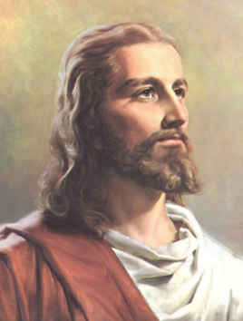

耶稣（公元前第2年—公元33年 [1] ）出生于伯利恒（今巴勒斯坦中部城市）为基督教的核心人物，子承父业做过一些杂活，在三十岁左右时开始传道， 根据《圣经》记载，三十三岁左右时，在罗马总督比拉多执政时受难，为了全人类的罪被钉死在十字架上，而后被门徒埋葬，第三天死而复活、并向门徒显现， 四十日后升天归位，并预言他必要在世界穷尽的审判之日在荣光中降临，建立荣耀的天国，给善带来最后的胜利。
耶稣基督降生的经过如下：他母亲玛丽亚许配了约瑟。未及合卺，却发现她已有身孕，怀自圣灵。她丈夫约瑟是个义人，不愿她公开蒙羞，就有意私下休了。 正在思忖这事，忽得一梦，有主的使者向他显现，道：约瑟呀大卫之子，你别怕，就娶玛丽亚为妻吧，因为她的身孕，是得自于圣灵。她会生一个儿子， 你要给他取名耶稣。因为将来救子民脱罪的是他！这一切，乃是应验主借着先知所传之言： 看哪，童贞女要怀孕生子，人要称他“以马内利”， 那名字意思是“上帝与我们同在”。
约瑟醒来，便遵照主的使者吩咐的，娶玛丽亚为妻；但未敢与她相认，直到儿子诞下，取名耶稣。